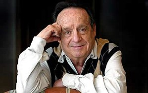

Roberto Mario Gómes y Bolaños (Chespirito)
Ator,humorista,produtor,diretor e roteirista mexicano.

Roberto Mario Gómez y Bolaños, também conhecido por Chespirito (Cidade do México, 21 de fevereiro de 1929 — Cancún, 28 de novembro de 2014) foi um ator, cantor, compositor, desenhista, engenheiro, escritor, humorista, pintor, poeta, produtor, publicitário, diretor, dramaturgo e roteirista mexicano.
Seus principais trabalhos são:
- (1970-1992)-El Chapulín Colorado
- (1980-1995)-Chespirito
- (1968-1995-Doctor Chapatín)
- (1956-1968)-Cómicos y canciones
- (1970-1995)-Chaparron Bonaparte
Se você quer saber mais sobre
Roberto Gomez Bolaños,
Clique aqui